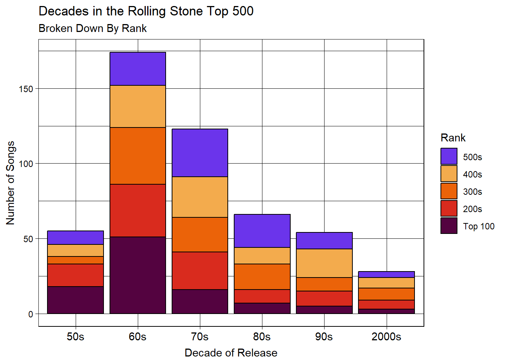
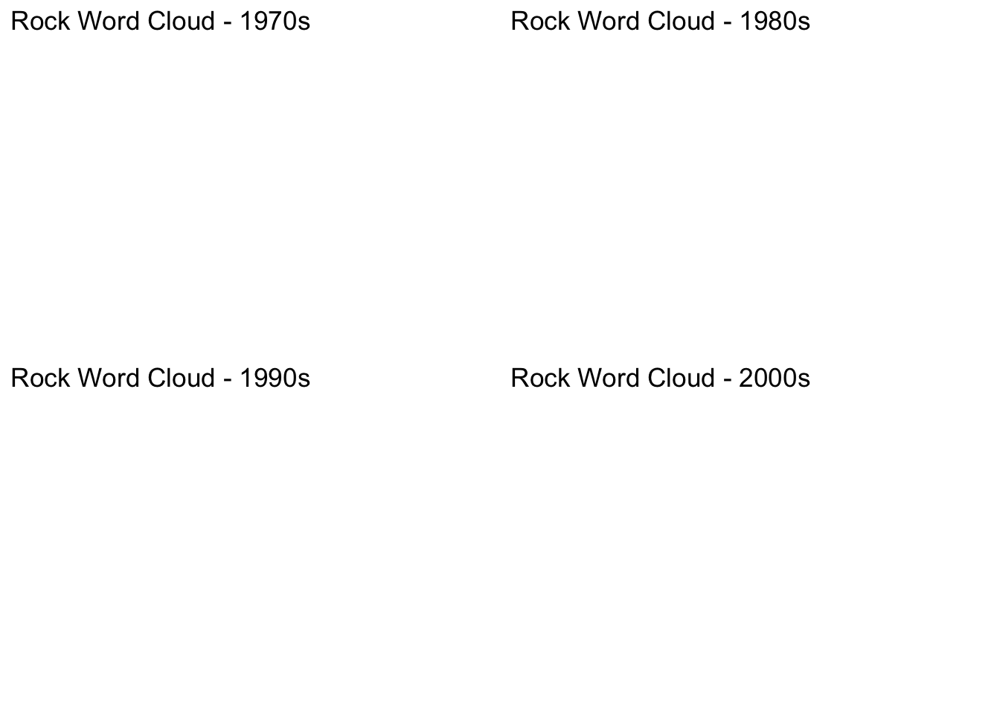

Analyzing Lyrics and Sentiment Trends from the Rolling Stones Top 500 Songs of All Time
Optional subtitle
Abstract
Music is a major source of entertainment that has strongly influenced peoples’ lives. This project seeks to investigate different trends in music lyrics through the use of text and sentiment analysis, using data of songs included in the Rolling Stone’s Top 500 Greatest Songs of All Time.
Getting started
This is an example of a Quarto website. All the Quarto markdown features we learned for formatting text, adding headings and subheadings, adding code and output, adding labels and captions and whatnot work as usual.
Introduction
Data Collection
We collected data from an online music database created by Dave Tompkins, a professor at the University of Waterloo in Canada. The data
Data Wrangling
Visualizations
`geom_smooth()` using method = 'loess' and formula = 'y ~ x'
`geom_smooth()` using method = 'loess' and formula = 'y ~ x'
Website project structure
The website project folder/repo will contain the following files, at a minimum:
_quarto.yml: A configuration file that controls the YAML content, similar to what we typically see at the top of our qmd files.Use this file to add or remove additional subpages, change the overall website title, customize the navigation bar contents and layout, change the website theme, and set any other default formatting options such as code chunk options.
index.qmd: This is the landing page of your website. This file must be called index.qmd and must be located in the root directory of the project.Use this page, at a minimum, to introduce your project. From there you can either fully include the contents of the project or use additional qmd files to create subpages of your website (perhaps explaining the structure of the website to the user on this landing page).
bibfolder: Contains the bibliography file, which you should edit to include your resources, and a .csl file that tells Quarto how to format in-text citations and the bibliography list according to the American Statistical Association citation style.docsfolder: The rendered content of the website will be located here.styles.css: This file is currently empty, but if you want to modify or replace the default theme, do so here using CSS. Students in the past have used custom color palettes or custom fonts, for example.Additional qmd files: If you want to add subpages with their own content, create new qmd files in your root directory to do so, being sure to include them in the list of contents in your
_quarto.ymlfile.
Other recommended content:
Similar to the Shiny project, you will need to organize your wrangling scripts and data. You may also have other images or figures saved for displaying in your blog that will also need to be organized. Here are recommendations for organization.
scripts: Store wrangling scripts in their own folderdata: Store datasets in their own folder, being sure to separate raw data from clean/processed data. You can do this in one of two ways: two separate data folders in the root directory (e.g.,raw-dataanddata) or two subfolders of a singledatafolder (subfolders called, for example,raw,processed).images: Organize saved images or figures together in their own folder. Make sure you keep track of the source of the images or figures and credit the sources in some way in your page (include source in caption and/or link image to source)
Workflow
Edit contents of any files. Each new qmd file is a self-contained environment, so you will need to load any necessary packages and datasets for rendering that particular file at the top of that file.
After updating a qmd file, Render the qmd file. Note that the rendered files (.html etc) are in the
docsfolder. Keep them there!Commit changes to website and PUSH to publish those changes.
Citations, cross-referencing, and linking between pages
Cross-referencing
You should use code chunk labels and in-text cross-references for figures and tables (see the Knitr examples at the link).
Quarto additionally provides similar syntax for creating labels for and cross-referencing equations, creating labels for and cross-referencing sections, and using code chunk options of the form lst-label: lst-your-listing-label and lst-cap: Code chunk caption to be able to cross-reference displayed code chunks (or “listings”) using the syntax @lst-your-listing-label within the text.
These are not required for this project but are good practice.
Creating and linking to subpages
You can create subpages by simply creating new qmd files. Any subpage you want to include on the website should be added to the website navigation list in the _quarto.yml file.
You can link to another page on the website by using just the filepath to the corresponding qmd file. You can also link directly to a section of a subpage.
Creating the bibliography
One of the new challenges of Quarto, relative to a Word or Google doc, is learning how to build a bibliography and use the specified citation keys to write in-text citations.
All items you plan to cite should be added to the library.bib bibliography file, which you can open from within RStudio and edit just like any other text file. You should use standard bibtex syntax for each entry, following the examples provided. If the resource you are using doesn’t already provide a way to generate a bibtex entry, I recommend using zoterobib to generate the appropriate syntax (must change the Bibliography style to “BibTeX generic citation style”). The entries currently in library.bib are intended to provide syntax examples that capture the range of entries you are most likely to use. You will need to delete and replace the contents of library.bib with your own citation entries.
Note
The examples in library.bib are nicely formatted so you can read and follow the patterns, but formatting and order of the library.bib file doesn’t actually matter and will not be assessed. Just be sure the citations are as complete as possible (authors, titles, dates, urls, dois, etc.).
Creating in-text citations
Items you cite in the text will be automatically added to a list of References at the bottom of the corresponding page. To cite a reference in the text, use the corresponding citation key (the first item in each bibtex entry—it shouldn’t have any spaces or special characters) and format the citation using the appropriate quarto format for in-text citations. This is similar to how we cross-reference tables and figures from code chunk labels. For example, the syntax
@hadley2016 provides excellent examples of customizing our visualizations using **ggplot2**.produces the following text:
Hadley (2016) provides excellent examples of customizing our visualizations using ggplot2.
And the corresponding reference is listed in full at the bottom of this page.
Quarto website features
Below I demonstrate examples for customizing aspects of your webpage. In the _quarto.yml file you’ll see additional links and information about customizing the website further.
Warning
Focus on completing the blog content first! You can play with features and customization after you’re happy with the contents of the blog.
Including images or gifs
I would strongly recommend using knitr’s include_graphics() functions within code chunks to include images or gifs within your blog. This makes it easier to modify figures, add captions and links, and visually find the code for figures quickly if you need to modify something about the output. There is also markdown syntax to display or embed images, but I would typically not recommend it.

Either approach will take either a filepath to a stored file or a URL to an image or gif. Width can be specified as a percentage of the width of the page (0% to 100%; my preferred approach) or as a fixed number of units (e.g. 400px, 3in, 10cm).
I can’t imagine a scenario where students should or would include videos within their blog, but Quarto provides guidance on embedding videos, as well.
Note
The first figure of your blog will be used as the display image on our course’s landing page!
Panel tabsets
Use the following format to add information or tables or visualizations in tabset panels.
Some information in one tab
Some information in a different tab
Panel layouts for content
Use the following format to have more control over the panel layout of various components.
The syntax “[ [1], [1,1] ]” indicates that we have three pieces of content that we want to spread across two rows. The first piece of content will be in its own row, and then the next two components will be split across two columns of equal width in a second row.
Row 1 with only one output
Some content
First column of row 2
Some other content
Second column of row 2
Some additional content.
The values provided within each row specify the relative widths of the content within that row. For example “[1,2,1]” would create a row with 3 columns where the first and third columns are the same width and the middle column is twice as wide.
Layouts for tables and visualizations produced by code chunks
For details on how to layout subfigures from multiple graphs produced by the same code chunk, see the examples in the Knitr tabs of the sections on figure layouts, subcaptions, and custom layouts.
The same syntax shown across the linked examples can be used to create subtables by replacing fig-cap and fig-subcap with tbl-cap and tbl-subcap.
Two examples in Table 1 and Figure 1 below are borrowed and slightly modified from the linked sections.
| speed | dist |
|---|---|
| 4 | 2 |
| 4 | 10 |
| 7 | 4 |
| temperature | pressure |
|---|---|
| 0 | 0.0002 |
| 20 | 0.0012 |
| 40 | 0.0060 |


References
Hadley, W. (2016), ggplot2: Elegant graphics for data analysis, Online book, New York, NY: Springer.